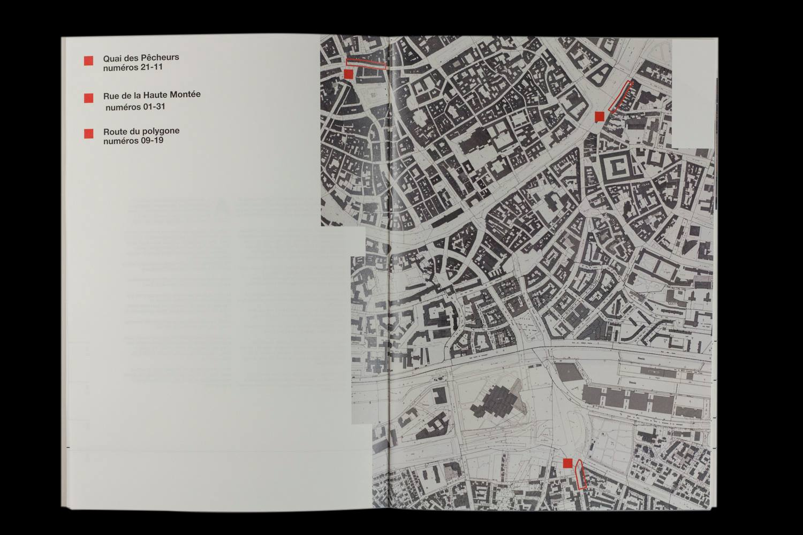
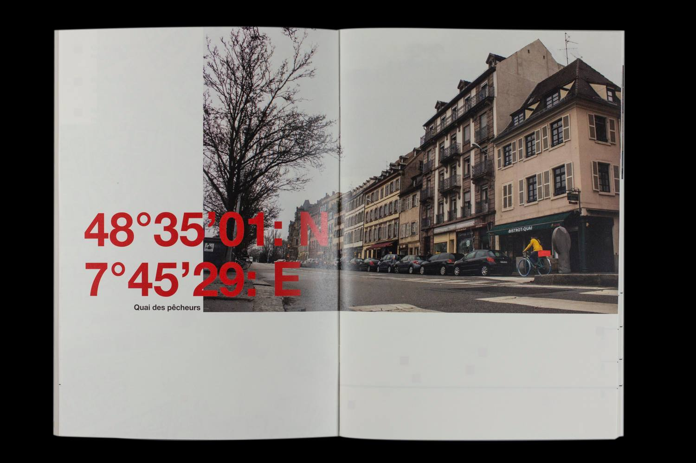
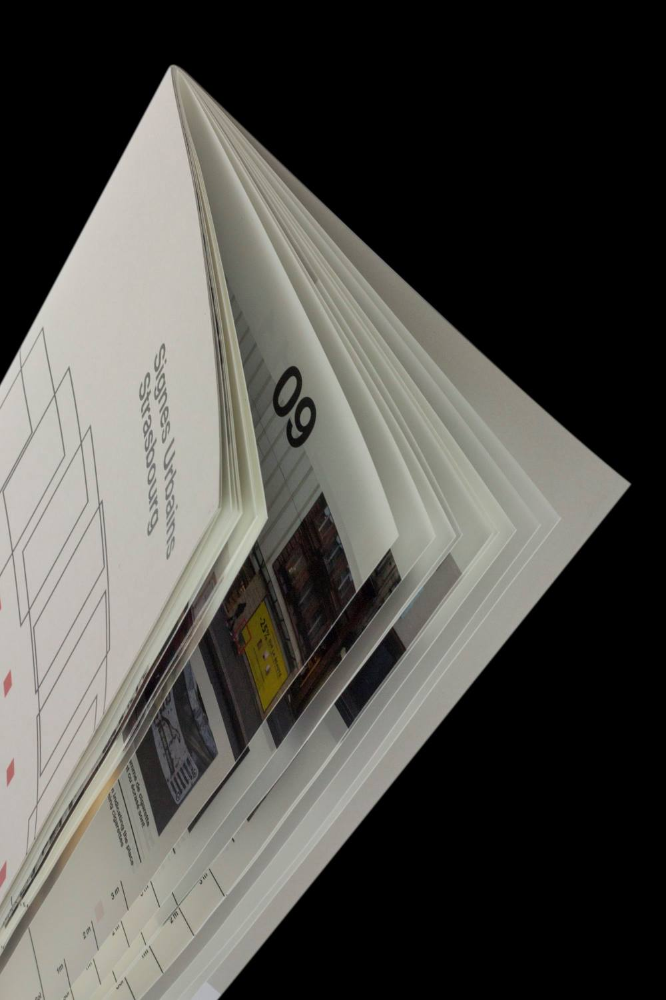

Les corps sont les sujets principaux de mon travail : je souhaite révéler par l’image comment ils sont résultat d’échanges sociaux complexes et comment ils peuvent devenir politiques. Je travaille aussi sur la déconstruction des médias et de leurs supports : je mets en tension techniques traditionnelles et derniers outils technologiques, pour explorer leurs possibles et découvrir de nouvelles formes de design. Le procédé de création d’une image est dans mes projets aussi important que le résultat final. C’est pourquoi je travaille autour de la révélation de la fabrique d’une image : je crée des images lo-fi où chaque étape de leur fabrication les a un peu plus détériorées. Pour mon diplôme, j’ai travaillé sur le harcèlement sexuel et les identités de genre, par la fiction et le reportage.
Écorché, 2018, crayons de papier et couleur, 12 x 10 cm.

Extrait de pellicules du film Elsa, 2018, photographie argentique, 29,7 x 21cm.

Muscles de la mâchoire et de la langue, 2018, crayons de papier et couleur, 24 x 18 cm.

Prototypes, 2018, cuivre martelé, poli, vernis, dimensions variées.